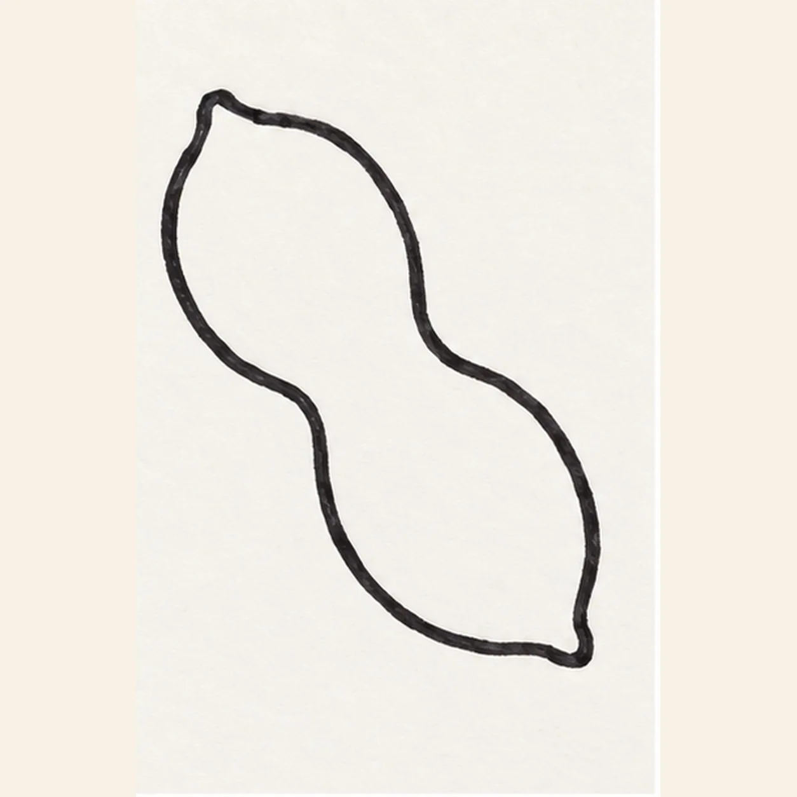
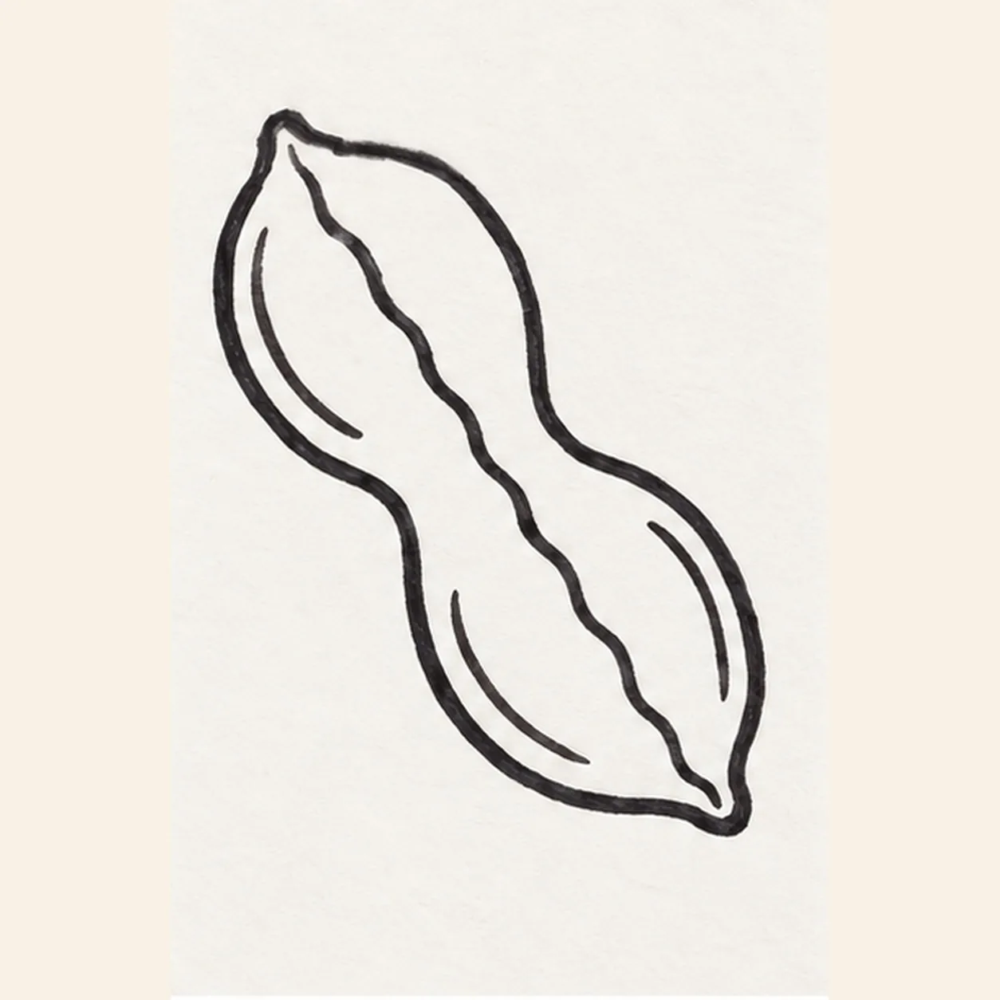
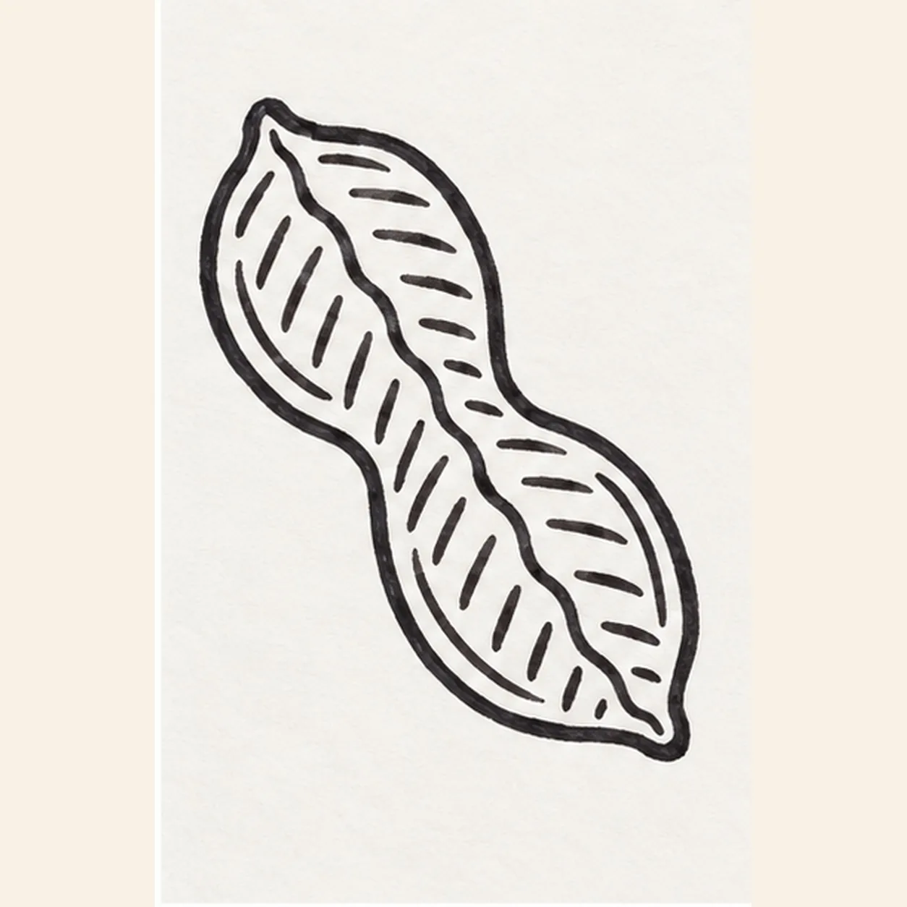
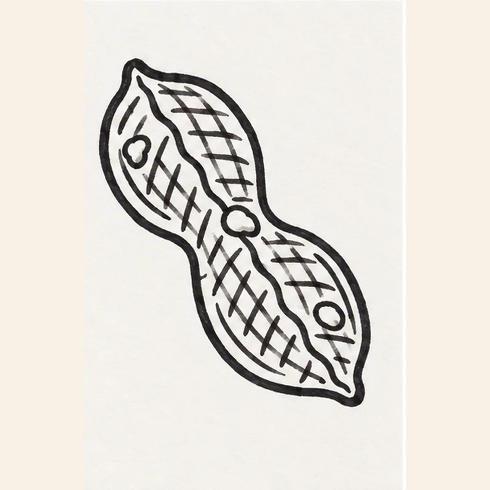
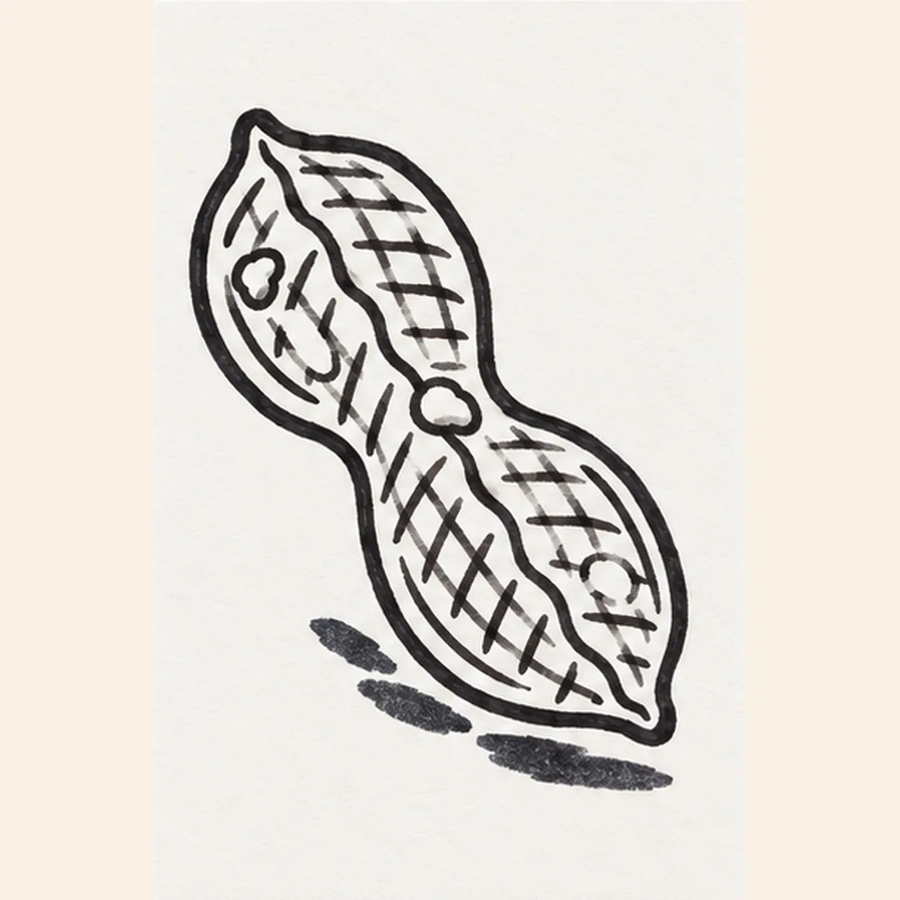

Marker ready?
Let's draw a peanut
Treat this as one playful practice round: sketch the idea loosely, simplify the shapes, then commit with confident marker outlines and bright fills.
-
01

Draw the peanut shell
Draw one long peanut shell tilted from upper left to lower right. Round both lobes, pinch the middle inward on both sides, and finish each end with a soft uneven point.
Marker tip: Pull each outer side in one relaxed stroke. Compare the two rounded lobes across the narrow waist before closing the lower tip.
-
02

Build the shell seams
Pull one wavy seam through the middle from the upper tip to the lower tip. Add one shorter inner rim curve inside each lobe, following the outer shell without touching it.
Marker tip: Keep the center seam lively but continuous. The two inner curves should echo their nearby outer edges and leave a broad open middle.
-
03

Stripe the first grooves
Across both lobes, draw short diagonal grooves that lean down toward the right. Stop every groove at the outer contour, center seam, or inner rim so the shell stays clean and readable.
Marker tip: Space the strokes by eye and keep them short. Rotate the page if that helps every groove lean in the same direction.
-
04

Cross the shell texture
Add a second family of short grooves leaning the opposite way to make a loose diamond texture. Place exactly three small rounded bumps along the shell, keeping them inside the established outline.
Marker tip: Let the crossings stay uneven and handmade. Count three bumps from upper lobe to lower lobe before moving on.
-
05

Reserve shine and shadow
Reserve exactly two small highlight shapes, one on each lobe, then draw one broken shadow beneath the lower edge without touching the peanut outline.
Marker tip: Keep the highlights within the shell texture and leave three clear gaps in the shadow so it feels quick rather than heavy.
-
06

Color the crunchy shell
Fill the established shell with warm tan and ochre marker, pulling strokes along each lobe. Deepen the existing seam and grooves with brown, color the same broken shadow deep navy, preserve both paper highlights, and add no new contours.
Marker tip: Color around the highlights first, then layer a few ochre passes over the tan. Stop while the crossed grooves and felt-tip grain remain easy to see.
![Handmade felt-tip marker drawing of one left-facing coral wind-up toy mouse with one round mustard inner ear, one sleepy crescent eye, one black triangular nose, one crooked smile, exactly three black whiskers, exactly two teal feet with two seam marks each, one black tail curled into an open loop, one attached mustard wind-up key with two oval lobes, exactly three teal body spots, exactly two open-paper highlights, thick imperfect black outlines, visible marker streaks, and one broken deep-navy shadow](assets/cartoon-wind-up-mouse-finished-v1.webp)